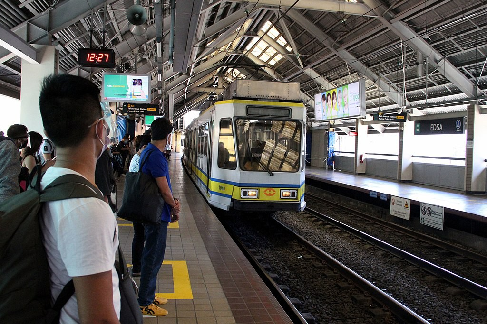

EDSA
LRT-1 station
EDSA station is an elevated Manila Light Rail Transit (LRT) station situated on Line 1. The station is located on the intersection of Taft Avenue and Epifanio de los Santos Avenue, better known as EDSA, one of Metro Manila's major thoroughfares. The station was named after EDSA, which in turn is named after Epifanio de los Santos, a noted historian.
The station is the second station for trains headed to Fernando Poe Jr., the nineteenth station for trains headed to Baclaran, and is one of the four Line 1 stations serving Pasay; the others are Gil Puyat, Libertad and Baclaran.
| EDSA | |||||||
|---|---|---|---|---|---|---|---|
|  | |||||||
| General information | |||||||
| Location | Taft Avenue, San Rafael, Pasay, Metro Manila, Philippines | ||||||
| Owned by | Department of Transportation Light Rail Transit Authority |
||||||
| Operated by | Light Rail Manila Corporation | ||||||
| Line(s) | Line 1 | ||||||
| Platforms | 2 (2 side) | ||||||
| Tracks | 2 | ||||||
| Connections | MRT-3 Taft Avenue | ||||||
| Construction | |||||||
| Structure type | Elevated | ||||||
| Parking | Yes (Metro Point Mall) | ||||||
| Accessible | Yes | ||||||
| Other information | |||||||
| Station code | ED | ||||||
| History | |||||||
| Opened | December 1, 1984 | ||||||
| Services | |||||||
|
|||||||
| Out-of-system interchange | |||||||
|
|||||||
The station is the second station for trains headed to Fernando Poe Jr., the nineteenth station for trains headed to Baclaran, and is one of the four Line 1 stations serving Pasay; the others are Gil Puyat, Libertad and Baclaran.
The station is served by an abundance of buses, jeepneys, and taxis on both EDSA and Taft Avenue routes, with stops near the station. EDSA Carousel's Taft Avenue station, located along EDSA, is accessible from the station through a pedestrian overpass adjoining the southbound platform. Many provincial bus lines, such as Victory Liner (serving Northern Luzon) and Philtranco (serving Southern Luzon and the rest of the Philippines), have bus terminals near the station. Buses and jeepneys from this station ply for various points in Metro Manila, like Pasay (including SM Mall of Asia), Muntinlupa (Sucat and Alabang), Taguig, Parañaque (Bicutan), Las Piñas, City of Manila, Quezon City, Caloocan, and Makati and the southern provinces of Cavite, Batangas, and Laguna.
The station is also the transfer point for commuters riding on MRT Line 3. The station is connected to MRT-3's Taft Avenue station by a walkway around the exterior of the Metro Point Mall, with two entrances to the mall itself.
In 2019, the station underwent expansion works to widen its capacity, from 70 square meters to 400 square meters as the station caters more than 52,000 passengers daily. It began on June 26. Initially expected to be finished in 2022, the upgrade was finished earlier than expected in anticipation for the Cavite Extension Project on October 21, 2019. The project consists of the expansion of the structure through the third floor of the adjacent Liana's Supermarket & Department Store and constructing a bridge to connect nearby areas.
The expansion also features a new roofing system, a widened floor area by dismantling the old ticket booths, an increased floor-to-ceiling height in other areas of the station, and the construction of a new fire exit for the southeast leg of the station. The expansion also features new comfort rooms, a Person With Disability (PWD) ramp, LED lighting setups, interior paint jobs, and floor finishes.
- On August 30, 2012, at 5:50 AM, a woman committed suicide after jumping in front of an approaching train at EDSA station. Operations were disrupted until operations resumed at 9:40 AM.
| Existing stations | |
|---|---|
|
Baclaran
EDSA Libertad Gil Puyat Vito Cruz Quirino Pedro Gil United Nations Central Carriedo |
Doroteo Jose
Bambang Tayuman Blumentritt Abad Santos R. Papa 5th Avenue Monumento Balintawak Fernando Poe Jr. |
| Under construction | |
|
Redemptorist
MIA Asia World Ninoy Aquino |
Dr. Santos
Las Piñas Zapote Niog |
| North Triangle | |